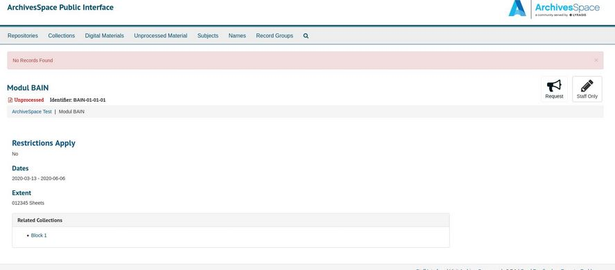

Was ich gelernt habe: Archivieren in englisch ist knifflig
ArchiveSpace und dSpace
Am Morgen beschäftigten wir uns mit Metadatenstandards in Archiven und dem Open Source Programm ArchiveSpace. Die Standards ISAD(G) und ISAAR(CPF) kenne ich schon aus der Berufslehre. Dagegen war RIC (Records in Context) neu für mich.
RIC - Records in Context
Seit 2012 wird der neue Standard für archivische Erschliessung vom EGAD (Expert Group on Archival Descreption des
International Council on Archives ICA) durch Mitglieder aus 13 Ländern entwickelt. Das Ziel ist es, die bestehenden Standards (ISAD(G),
ISAAR(CPF), ISDF, ISDIAH) durch einen zu ersetzen. Zudem werden neue Kommunikationstechnologien, Begriffsmodelle und die Kritik an
der aktuellen Praxis in der Entwicklung berücksichtigt. Quelle
Die schweizer Version des RIC wird von der Projektgruppe Ensemen des VSA
entwickelt. Der Fokus liegt jedoch nicht nur auf RIC, die Gruppe beschäftigt sich zusätzlich mit Möglichkeiten, Metadaten von Primärquellen
maschinenlesbar automatisch und über Systemgrenzen hinweg austauschen zu können.
EAD - Encoded Archival Description
Der XML Standard, der erstmals 1995 veröffentlicht wurde, beschreibt archivische Findmittel und wird von einem Komitee der Society of American Archivists
und der Library of Congress entwickelt. Die aktuelle Version EAD3 stammt aus dem Jahr 2015. Der Code wird ebenfalls Open Source auf GitHub zur
Verfügung gestellt.Quelle
ArchiveSpace
Das Open Source Programm für Archive wurde 2009 von einem Konsortium US-Amerikanischer Bibliotheken und Archive ins Leben gerufen. Im Februar 2020 wurde
die neuste Version (v.2.7.1) veröffentlicht. Seit 2015 gibt es ein jährliches Forum für Mitglieder und seit 2017 einen Jahresbericht über die Entwicklungen.
Mit den Mitgliederbeiträgen kann die professionelle Weiterentwicklung und Unterhaltung mit 5 Mitarbeiterinnen gewährleistet werden. ArchiveSpace
wird von LYRIASIS gehostet und unterstützt.

Nach der Installation von ArchiveSpace verlief problemlos. Als es dann um das Erstellen von Datensätzen ging, entstand Verwirrung um die Bedeutung der verschiedenen
Begriffe. Ich konnte nicht herausfinden, was mit Accessions gemeint ist und ob Collections tatsächlich das meint was ich darunter verstehe. Auch der Aufbau des Programms
bereitete mir Mühe, mich zurechtzufinden. Ich musste immer wieder suchen, wo ich welche Einträge gemacht habe und wirklich sehen, ob funktioniert hat was ich wollte, konnte
ich auch nicht. Wahrscheinlich liegt es vor allem daran, dass ich die Begriffe im Englischen nicht kannte. Hätte ich die gekannt, wäre mir die Orientierung und das Erfassen von
Datensätzen bestimmt besser gelungen.
Am Nachmittag stand die Open Source Software dSpace auf dem Plan. Dieses habe ich im Zusammenhang mit Hamburg Open Science (HOS) und
einem Projekt an der HAW Hamburg bereits kennengelernt. An der HAW Hamburg wird ein Hochschulrepositorium aufgesetzt und ursprünglich wollten
wir in einer Projektgruppe ein studentisches Repositorium mit dSpace aufsetzen. Jedoch konnte das nicht umgesetzt werden, weil die
Entwicklung des Hochschulrepositoriums mit dem Zeitplan hinterher hinkte. Wir kamen jedoch in den Genuss einer Präsentation von
Pascal Becker, der uns dSpace als auch sein Geschäftsmodell vorstellte.
Er erklärte uns, wie man den "Open-Gedanken" umsetzen und trotzdem daran Geld verdienen kann. Jedoch konnte ich mich nicht mehr gut an die Software erinnern,
weil wir anschliessend mit OJS gearbeitet haben.
Die Kombination von Open Source, Open Data, Open Research und Open Access in einem Tool finde ich sehr faszinierend.
Erfahrungsbericht Übungen
Mit der ersten Aufgabe, der LibraryCarpentry Lesson zu OpenRefine, hatte ich zu Beginn grosse Mühe. Ich konnte das Programm nicht auf meinem Laptop installieren, Windows blockierte es und alle meine Versuche, die Sicherheitseinstellungen zu umgehen, scheiterten. Also versuchte ich es auf der Virtuellen Maschine. Dort funktionierte der wget Befehl zum herunterladen nicht, nach einigen Versuchen dann aber direkt via Firefox. Das grössere Problem stellte sich mir dann, als ich die zip Datei nicht mit dem Befehl unzip entpacken konnte. Wie ich dann herausfand, musste ich den tar -xvzf Befehl anwenden. Dann endlich funktionierte die Installation und ich konnte mit den Übungen beginnen. Die ganze Installation kostete mich etwa eine Stunde Zeit, die Übungen waren relativ einfach und ich war nach zweieinhalb Stunden durch.
Die zweite Aufgabe, die LibraryCarpentry Lesson zu MarcEdit (in der Pre-Alpha Version), war wesentlich einfacher. Da mir das Marc-Format bereits bekannt ist, hatte ich keine Mühe mit der Interpretation der Felder. Es war jedoch interessant, mehrere Datensätze zu durchsuchen und z.B. Wörter zu ersetzen. Gewisse Übungen verstand ich nicht, respektive konnte die Befehle nicht richtig interpretieren (Übung 6: =245 .[^4]\$aThe).
Die letzte der drei Aufgaben, das Apache Solr Tutorial, war für mich sehr interessant. In einem Seminar hatte ich dieses Semester mit einer Bibliothek zu tun, die ihre Datenbank mit Apache Solr betreibt. Das Tutorial war sehr gut verständlich und übersichtlich. Es erklärte die einzelnen Schritte genau. Den letzten Teil (eigene Daten importieren) konnte ich aus zeitlichen Gründen leider nicht mehr machen.